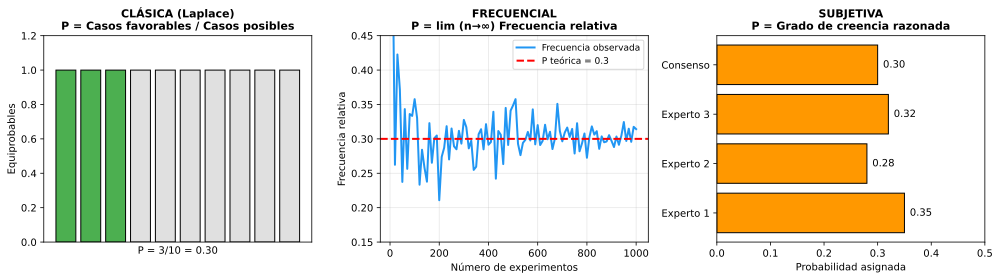

Sesión 10: Definiciones de Probabilidad
🎯 Objetivos
- Conocer las tres definiciones de probabilidad: clásica, frecuencial y subjetiva
- Comprender cuándo usar cada definición según el contexto
- Calcular probabilidades usando la definición de Laplace
- Interpretar frecuencias relativas como aproximaciones a probabilidades
📚 Las Tres Definiciones
1. DEFINICIÓN CLÁSICA (Laplace):
\[ P(A) = \frac{\text{Casos favorables a } A}{\text{Casos posibles totales}} = \frac{|A|}{|\Omega|} \]
Requisito: Todos los resultados deben ser EQUIPROBABLES (igualmente probables).
Cuándo usarla: Experimentos simétricos (dados, monedas, cartas, etc.)
2. DEFINICIÓN FRECUENCIAL (Von Mises):
\[ P(A) = \lim_{n \to \infty} \frac{n(A)}{n} \]
Donde n(A) = veces que ocurre A, n = número total de experimentos.
Cuándo usarla: Cuando NO hay simetría pero podemos repetir el experimento muchas veces.
Ejemplos: Probabilidad de lluvia, tasa de defectos en producción.
3. DEFINICIÓN SUBJETIVA (Bayesiana):
P(A) = Grado de creencia racional sobre la ocurrencia de A, basado en información disponible.
Cuándo usarla: Eventos únicos no repetibles.
Ejemplos: Probabilidad de victoria electoral, de terremoto en zona concreta.

📊 Comparación
| Definición | Ventajas | Limitaciones | Ejemplo |
|---|
| Clásica |
Cálculo exacto sin experimentos |
Solo si resultados equiprobables |
P(par) en dado = 3/6 |
| Frecuencial |
Aplicable a fenómenos reales |
Necesita muchos datos |
P(lluvia mañana) ≈ 30% |
| Subjetiva |
Funciona con eventos únicos |
Depende de información del experto |
P(vida en Marte) = 0.15 |
Ejercicios
Ej 1: Dado equilibrado. Calcular P(A) siendo A = "Obtener múltiplo de 3".
Ver solución
Método: Definición CLÁSICA (dado equilibrado → equiprobable)
Ω = {1, 2, 3, 4, 5, 6} → |Ω| = 6
A = {3, 6} → |A| = 2
\[ P(A) = \frac{|A|}{|\Omega|} = \frac{2}{6} = \frac{1}{3} \approx 0.333 \]
Interpretación: En cada lanzamiento, hay un 33.3% de probabilidad de obtener múltiplo de 3.
Ej 2 (Contexto Vigo): Según datos meteorológicos de 2000-2025, en Vigo llovió 148 días de 365 en promedio anual. Estimar P("Lluvia mañana aleatorio").
Ver análisis
Método: Definición FRECUENCIAL (fenómeno natural sin equiprobabilidad)
\[ P(\text{Lluvia}) \approx \frac{148}{365} \approx 0.405 = 40.5\% \]
Interpretación:
- En un día cualquiera, hay ~40% de probabilidad de lluvia en Vigo
- Es una estimación basada en frecuencias históricas
- La probabilidad real varía según: estación del año, predicción meteorológica, cambio climático...
Limitación: Esta es probabilidad "a priori" sin contexto. Si sabemos que estamos en agosto, la probabilidad real baja significativamente.
Ej 3: Urna con 5 bolas rojas, 3 azules, 2 verdes. Extraer una al azar. Calcular:
- a) P(Roja)
- b) P(No verde)
- c) P(Roja o azul)
Ver solución completa
Datos: Total bolas = 5 + 3 + 2 = 10
Método: Clásica (extracción al azar → equiprobable)
a) P(Roja):
\[ P(R) = \frac{5}{10} = \frac{1}{2} = 0.5 \]
b) P(No verde):
Bolas no verdes = 5 + 3 = 8
\[ P(\overline{V}) = \frac{8}{10} = \frac{4}{5} = 0.8 \]
Alternativa: \(P(\overline{V}) = 1 - P(V) = 1 - \frac{2}{10} = 0.8\)
c) P(Roja o azul):
Bolas rojas o azules = 5 + 3 = 8
\[ P(R \cup A) = \frac{8}{10} = 0.8 \]
Ej 4: Se lanza un dado 600 veces y se obtiene:¿Qué probabilidad FRECUENCIAL asignarías a cada cara? ¿Parece el dado equilibrado?
| Cara | 1 | 2 | 3 | 4 | 5 | 6 |
|---|
| Frecuencia | 98 | 102 | 105 | 95 | 118 | 82 |
Ver análisis
Probabilidades frecuenciales (n = 600):
P(1) ≈ 98/600 = 0.163
P(2) ≈ 102/600 = 0.170
P(3) ≈ 105/600 = 0.175
P(4) ≈ 95/600 = 0.158
P(5) ≈ 118/600 = 0.197
P(6) ≈ 82/600 = 0.137
Análisis de equilibrio:
- Si dado equilibrado → P(teórica) = 1/6 ≈ 0.167 para todas
- El 5 aparece más: 0.197 vs 0.167 esperado (+18%)
- El 6 aparece menos: 0.137 vs 0.167 esperado (-18%)
Conclusión: Hay indicios de desequilibrio, especialmente en caras 5 y 6. Para confirmarlo, haría falta:
- Test estadístico (chi-cuadrado)
- Más lanzamientos (1000+)
💡 Propiedades Básicas (válidas para TODAS las definiciones)
- \(0 \leq P(A) \leq 1\) (La probabilidad es un número entre 0 y 1)
- \(P(\Omega) = 1\) (El suceso seguro tiene probabilidad 1)
- \(P(\emptyset) = 0\) (El suceso imposible tiene probabilidad 0)
- \(P(\overline{A}) = 1 - P(A)\) (Complementario)